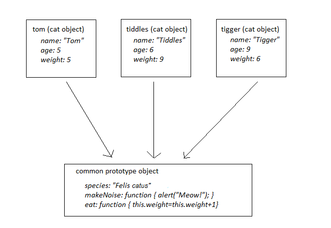

Note: This is additional reading, not essential for the module, but is a more advanced topic which some of you might find interesting. It describes JavaScript's underlying mechanism for creating many objects of the same type - prototypes. This is how classes work under the hood - when you create a class, you define a prototype.
You have seen, when creating objects, that there is a problem in which we were unable to easily set up many versions of similar objects, such as many cats which all have different names but all work in the same way, i.e. all have the same methods.
If you have had experience of other object-orientated languages, you will have come across the constructor. The constructor is a special method used to define how objects are created. In JavaScript, the constructor works in a different way to other languages. It is an ordinary function which is used to create objects when used together with the "new" keyword. What do we mean by this? Consider this function which could be used as a possible constructor:
function Cat(n, a)
{
this.name = n;
this.age = a;
}
When used with new, this constructor
function can be used to create new Cats. It takes two parameters, n (the name)
and a (the age), and sets the name and age properties of objects created using this constructor
to those two parameters. ("this" refers to the object that will be created with the constructor).
So we could use the constructor function to create two new Cat objects:
var cat1 = new Cat("Tiddles", 10);
var cat2 = new Cat("Tigger", 7);
// Display the cats to show that it worked
alert(cat1.name + " " + cat1.age);
alert(cat2.name + " " + cat2.age);
When the new keyword is used in code together with a function name (e.g. Cat) this tells JavaScript
to create a new object using the specified function (Cat here). Note that unlike other languages,
Cat is not a data type. It is simply a function name.
In fact, one could call Cat just like a regular function, but it wouldn't do a lot in that case. For instance the code
var cat1 = Cat("Tiddles",10); // note no "new"
would be perfectly legal JavaScript, but wouldn't do anything, unless the Cat function returned something, in which
case the variable cat1 would be assigned the return value of the Cat function.
The problem we have so far is that we have to repeat code for several objects of a similar type. This also has the effect of creating multiple copies of methods in memory for each object of that type, which is very memory-inefficient. We can get round this problem using prototypes.
Constructor functions have a special property, prototype, which defines a "blueprint" or "template" object to use when creating new objects with that constructor. (How can a function, such as the constructor, have properties? In JavaScript, functions are a form of object, so because a function is an object, it can have properties). So we can define a prototype for cats, by assigning properties and methods to the prototype property of the Cat constructor, and then create many Cats which use that prototype. Then, only one copy of these shared properties and methods need be stored in memory..
The code below shows this:
function Cat(n,a,w)
{
this.name=n;
this.age=a;
this.weight=w;
}
Cat.prototype.species = "Felis catus";
Cat.prototype.nLegs = 4;
Cat.prototype.makeNoise = function() { alert("Meow!"); };
Cat.prototype.eat = function() { this.weight++; };
Note how we use the prototype property of the constructor function, Cat. The prototype property represents the prototype of all
objects created with this constructor function, in other words the prototype property of all cats.
So, all cats will have a prototype containing:

We can prove that the prototype works with the following code:
function Cat(n,a,w)
{
this.name=n;
this.age=a;
this.weight=w;
}
// Setup the prototype in the "global" area, outside any functions
Cat.prototype.species = "Felis catus";
Cat.prototype.nLegs = 4;
Cat.prototype.makeNoise = function() { alert("Meow!"); };
Cat.prototype.eat = function() { this.weight++; };
// Function to test creating objects with prototypes - might be linked to a button
function testprototypes()
{
var cat1 = new Cat("Tiddles", 10, 10);
var cat2 = new Cat("Tigger", 7, 8);
alert(cat1.species); // "Felis catus"
alert(cat2.species); // "Felis catus"
cat1.makeNoise(); // "Meow!"
cat2.makeNoise(); // "Meow!"
}
Note how, even though makeNoise() and species are part of the prototype, we can access them directly using simply the object name plus the method or property, for example cat1.makeNoise() (we don't have to use something like cat1.getPrototype().makeNoise()).
The presentation of the material on prototypes was inspired by the following online references which you might find useful:
As always I would recommend David Flanagan's "JavaScript - The Definitive Guide" for further reading.